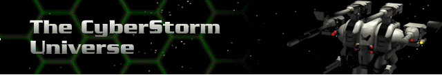

Paracelsus System |
Ionis System |
M138 System |
Dirol |
Hyperion |
Gehenna |
Beran |
Praab |
Charon |
Mardalla |
Salikh |
Acheron |
Tirith |
Dorn |
|
Brell |
Odon |
|
Ora |
Dobo |
|
Parsus |
Xhiron |
|
Basmalt |
||
Tahn |
||
Kabulov |
||
Ursk |
||
Muynak |
||
Morav |
Paracelsus
Dirol
This is an example of a planet that is probably a captured asteroid. It is dense enough to exert a Terra-class gravitational field. Most of Dirol’s surface is covered with ice, probably composed of frozen gases. Varied elevations on Dirol’s glaciers provide some strategic cover, though movement on ice is slower and hinders targeting.
Gravity: 100%; Atmosphere: None; life threatening; EM Field: Variant; effects on shields will be greatly amplified.
Beran
This planet is an anomaly. Its orbit has an average radius of 300 million miles, yet it is a completely developed Terra class world with atmosphere and vegetation. There is evidence to suggest that Beran and Brell my be terraformed planets.
Changes in elevation on Beran are gradual and provide little obstructive cover. There are enough trees and boulders, however, to provide some defense. Hercs should move well over hard rock, while icy terrain and swamps provide poor fighting conditions.
Gravity: 93%; Atmosphere: Normal, life supporting; EM Field: Significantly polarized; poses no danger and may have beneficial effects on Bioderm Stability and skill implants.
Mardalla
Mardalla is the larger of Beran’s two moons and younger by 500 million years. This moon’s age may be insufficient for the generation of complex ore deposits. Its size and an unusually dense core enable it to retain a hospitable gravity, an electromagnetic field, and even a minimal atmosphere. Because Mardalla is heavily composed of toxic metallic compounds, its atmosphere would soon poison a Bioderm that is not protected by a life support system. Its high metallic content is also responsible for terrain discoloration.
Gravity: 50%; Atmosphere: Poisonous, life threatening; EM Field: Normal
Tirith
Tirith is smaller and older than its neighbor moon, Mardalla. This moon’s heavily cratered surface attests to its advanced age. It has been proposed that Tirith is actually a meteor captured by Beran’s gravity. In this event, the potential exists for a greater number of ore deposits being present than on a normal moon.
Extremely gradual changes in elevation offer few strategic opportunities. Huge craters may provide some defense, but will upset targeting. Smooth terrain affords easier movement, while jagged or rough terrain hinders movement and targeting ability.
Gravity: 37%; Atmosphere: None; life threatening; EM Field: systemsVariant; Greatly accelerates Bioderm aging.
Brell
Brell is an even greater mystery than its neighbor, Beran. Brell is over 500 million miles from the sun, yet it hosts an even more lush ecology than Beran. The mountainous jungle terrain of this planet is fed by a network of rivers. Early data concerning Brell indicated a planet covered by desert. If this is true, Brell may have been terraformed by the Cybrids. Varied elevations on Brell provide some degree of cover. Much of the larger plant life provides some defense as well. Water is difficult to move through and is a defensive disadvantage. Jagged terrain hinders movement and targeting ability.
Gravity: 90%; Atmosphere: Normal, life supporting; EM Field: Significantly polarized; implantgreatly enhances sensors.
Ora
Former site of the Mox Tarsus mining colony. Its erratic terrain and heavy Cybrid infestation have made this moon difficult to mine.
Varied elevations on Ora provide some strategic cover. Smoother ground allows easier movement. Rough or jagged terrain is more difficult to cross and upsets targeting.
It has half the gravity of a Terra class planet. Gravity: 52%; Atmosphere: None; life threatening; EM Field: Normal
Parsus
The same tri-nitrogen compound responsible for the brilliant terrain discoloration on Parsus causes a buildup of inert gases in Bioderm respiratory tissues. This would eventually create a condition similar to nitrogen narcosis and quickly asphyxiate a Bioderm operating without minimal life support.
Though much of the topography on Parsus is made up of gradual changes in elevation, there are enough cliffs to provide adequate defense. Smoother ground allows easier movement. Rough or jagged terrain is more difficult to cross and upsets targeting.
Gravity: 117%; Atmosphere: Highly poisonous; life threatening; EM Field: Normal
Ionis
Hyperion
Continuous volcanic activity, combined with Hyperion’s proximity to the star Ionis, keep the planet's surface temperature high enough to quickly kill a Bioderm without minimal Life Support.
Hyperion’s topography provides some degree of cover. Many of the larger cinder cones can be used defensively as well.
Gravity: 89%; Atmosphere: Highly poisonous; life threatening; EM Field: systemsVariable; greatly accelerates Bioderm aging.
Praab
Praab is a tiny jungle planet that should be covered in ice. The presence of an electromagnetic field with an inhibiting wave signature greatly hindered initial analysis.
Praab’s mountainous terrain offers some strategic elements, though changes in elevation are too gradual to offer much cover. Trees and boulders offer some protection, and a series of bizarre monoliths found only on Praab are unusually beneficial.
Gravity: 82%; Atmosphere: Normal; life supporting; EM Field: The electromagnetic field surrounding this planet displays an inhibiting wave signature that will constrict any electronflux capacitor, and render ELF weapons useless.
Salikh
Salikh may have lost any breathable atmosphere it once had during its initial formation. Any water remaining would be at the sub-microscopic level. Changes in elevation on Salikh are greater than they appear. Mesas and spires on this world provide excellent strategic opportunities.
Gravity: 70%; Atmosphere: None; life threatening; EM Field: The atmosphere of this world is densely saturated with particulate matter, which prevents the firing mechanisms of cannons and other ballistic weapons from operating.
Dorn
The planet Dorn was most likely a Terra-class world at one time. Oxidation and nitrate depletion have destroyed any native life, though Dorn’s atmosphere will remain breathable for several millennia. Sudden changes in elevation may be the result of internal instability. In fact, the elevation extremes have earned Dorn the nickname “Maze World.” These natural formations provide strategic advantages. Dead trees and boulders could also be used defensively, if needed. Polarized amber, found only on Dorn, may somehow aid weapon performance.
Gravity: 150%; Atmosphere: Normal; life supporting; EM Field: Significantly polarized; implantgreatly enhances sensors.
Odon
Odon meant “the golden one” in Newspeech.
Odon’s surface is now baked and dry destroying any life it once had. Veins of pyrite-based compound can be found running through it. The deep gouges in the planet’s surface could prove to be deathtraps due to the hindering effects of the uneven terrain. Boulders and dead trees may provide enough protection to take control of the surface.
Gravity: 29%; Atmosphere: None; life threatening; EM Field: Densely saturated with particulate matter which prevents the firing mechanisms of cannons and other ballistic weapons from operating.
Dobo
In the “Corporate mythos” of the splinter faction that discovered this system, Dobo and Odon were the sons of a great leader, Dorn, who was assassinated by his rivals. The sons avenged his death by destroying all of Dorn’s enemies, and then stood vigil at his tomb until his return. In the “Newspeech” of that time, the name Dobo meant “the aggressive one.”
Deep ravines and pits in this world may provide unique cover in some situations.
Gravity: 103%; Atmosphere: None; life threatening; EM Field: Acute high-frequency wave distortion which effectively shuts down missile and rocket launch mechanisms.
Xhiron
The atmosphere of Xhiron is composed primarily of methane and particulate corrosives. Fissures in the planet’s surface continually produce toxic gases, evidence of this world’s unstable interior. Xhiron’s frozen gas glaciers present excellent opportunities for hit-and-run tactics. Their elevation prevents line of sight possibilities and creates difficult maneuvering conditions.
Gravity: 200%; Atmosphere: Corrosive and/or toxic; life threatening; EM Field: The outer crust of this world is so dense that mining devices will require twice the normal amount of energy to operate.
Basmalt
Like Dorn, Basmalt was probably a completely Terra-class world. A shift in this planet’s orbit resulted in the destruction of any native life. Continuous tectonic activity has resulted in a mostly uniform topography. Basmalt’s atmosphere is considered toxic.
Basmalt’s gradual changes in elevation provide little cover. Movement along its rocky ridges proves easier than its sandy floor. Ancient alien artifacts on this planet may have a positive effect on weapons systems.
Gravity: 110%; Atmosphere: Corrosive and toxic; life threatening; EM Field: Neutron emissions reveal the presence of a variant electromagnetic field surrounding this planet. The effects of energy-based weapon systems will be greatly impaired.
Tahn
Tahn is a large enough moon to retain a sufficient gravity field and a breathable atmosphere. It has a lush jungle environment dense enough to discourage colonization in some cases. Heavy Cybrid infestation is indicated. This moon is apparently of particular interest to the Cybrids, perhaps because of its electromagnetic field.
Changes in elevation on Tahn are more gradual than they appear. Trees and related plant life are the major defensive elements this world has to offer. Bodies of water are made more difficult to cross by exposed rocks.
Gravity: 97%; Atmosphere: Normal; life supporting; EM Field: The electromagnetic field surrounding this world appears to be significantly polarized. implantsSensors will be greatly amplified.
Kabulov
Extreme caution is advised in exploring this moon. Little is known about Kabulov because of its extremely inhibiting electromagnetic field. It has been speculated that an unknown element exists at this moon’s core.
Most of Kabulov appears flat, with occasional unbroken mountain ridges.
Gravity: 44%; Atmosphere: Highly poisonous; life threatening; EM Field: Heavy ion signature; dampens the effectiveness of shields, sensors, and weapons systems.
Ursk
Ursk is covered in a sheet of frozen methane and trace minerals. Its rugged beauty is offset by an inhibiting electromagnetic field and poisonous atmosphere.
Varied elevations on Ursk’s glaciers provide some strategic cover, though movement on ice is slower and hinders targeting.
Gravity: 63%; Atmosphere: Corrosive and/or toxic; life threatening; EM Field: Heavy ion signature; dampens the effectiveness of shields, sensors, and energy-based weapons systems.
Muynak
In geological terms, Muynak is a recently-formed moon. Shifting plate tectonics continually release lava flows across its surface. Muynak’s compact wave electromagnetic field has made analysis difficult.
Gradual changes in elevation offer little cover. Many of the larger cinder cones can be used defensively.
Gravity: 33%; Atmosphere: Corrosive and/or toxic; life threatening; EM Field: Compact-wave based; amplifiedAnti-grav systems will not function.
Morav
Morav was seen as an ideal colonization site before Cybrid infestation was discovered. In Newspeech, the name “Morav” meant “Paradise.”
Morav is covered by shallow, intersecting rivers. Its gentle terrain offers little protection, although much of the larger plant life could be used as cover.
Gravity: 136%; Atmosphere: Normal, life supporting; EM Field: Normal
M138
Gehenna
Robotic probes were destroyed before reaching this planet. Long range spectral analysis suggests a severely corrosive atmosphere due to the presence of unknown compounds. Heavy volcanic activity is also indicated. This planet’s code name, as well as its moons, refer to ancient legends of an underworld.
Gravity: 213%; Atmosphere: Corrosive and toxic; life threatening; EM Field: weaponsExplosive effects will be greatly dampened.
Charon
Robotic probes were destroyed before reaching this moon. Long-range spectral analysis indicates an extremely corrosive atmosphere due to the presence of unknown compounds
Gravity: 33%; Atmosphere: Highly poisonous; life threatening; EM Field: inoperativeSensors and targeting computers will be significantly impaired.
Acheron
Robotic probes were destroyed before reaching this moon. Long range spectral analysis suggests an extremely corrosive atmosphere and an unusually strong gravitational pull.
Gravity: 200%; Atmosphere: Highly poisonous; life threatening; EM Field: The electromagnetic field surrounding this planet indicates a narrow ion signature. This will effectively inoperablrender sensors inoperative.